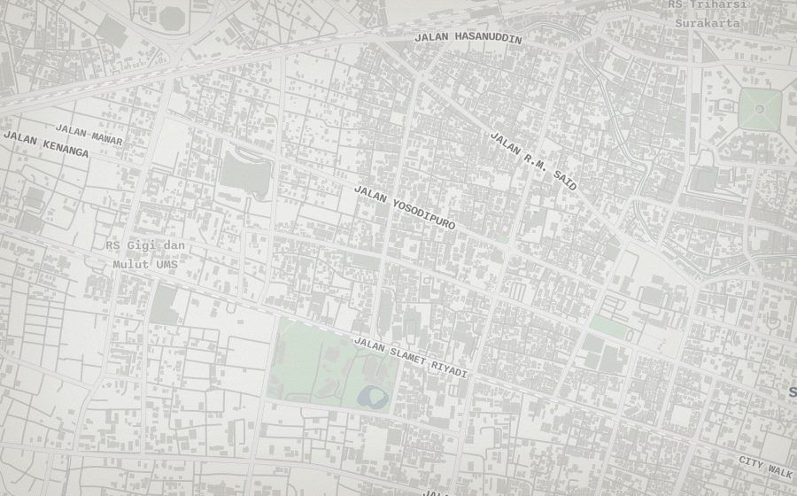
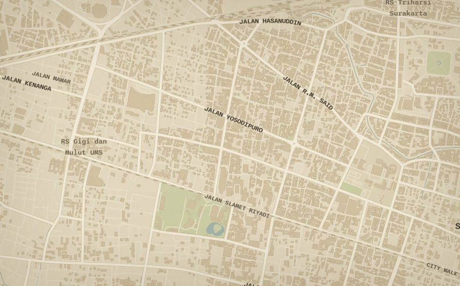
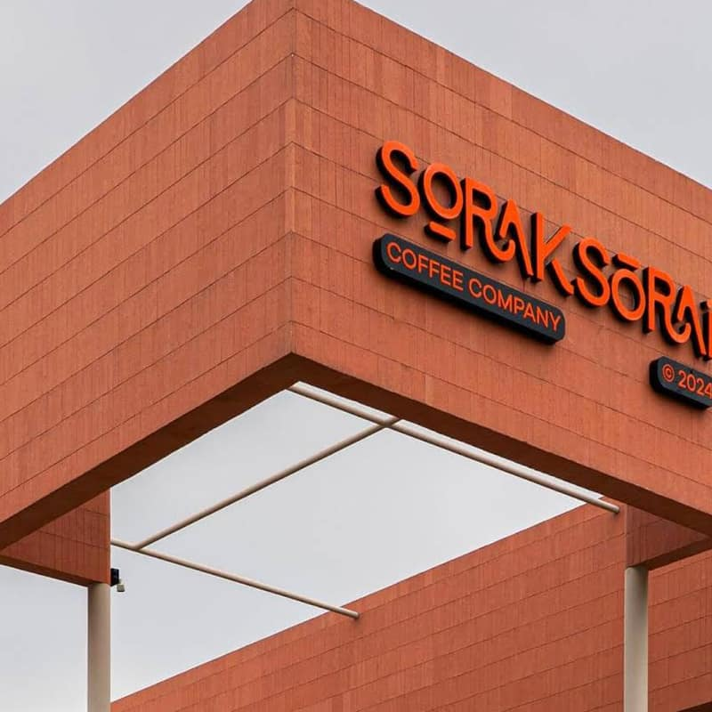

Why redesign a redesign
The current app is organised well, but it looks like every map app. Rounded daisyUI fields, a bottom sheet, badges and cards — none of it belongs to Solo, or to coffee.
The brief this time is specific: make it experimental, use a pattern people do not see in every product, avoid rounded corners and purple gradients, and lean into texture and skeuomorphism. Drop daisyUI if that is what it takes.
The trap is to paste paper texture onto the same floating panel and call it done. A skin does not make a design experimental. The object itself has to change. So the proposal is not a theme: it is one physical object — a printed field atlas of Solo — and every screen is a part of that object.
The app
A map with a panel. The panel is a rounded card, the markers are coloured pins, state is a badge. It would work for restaurants, dentists or parking.
The skin
Atkinson on a paper background, rounded cards with a grain overlay. The metaphor decorates the layout instead of producing it.
The object
A field atlas: a map plate, a legend sheet, an index, record cards and a pencil. Every pattern comes from that object.
The report is a static mockup, not a screenshot of the app. The map is the real Alidade style, recoloured; the shops, hours and distances are real. Pin positions are illustrative. Nothing in the application has been changed.
The object
A field atlas is a map, an index and a set of record cards, printed on paper, carried to a shop and marked up by hand.
Paper and ink
No glass, no blur, no gradient, no rounded corner. Depth comes from one sheet lying on another and from a single soft cast shadow. Rules are 1px ink hairlines. The only curves are drawn: tacks, a compass, a pencil tick, a star.
The plate is the map
The map is not a background behind a card. It is a plate with margins, a scale bar, a north arrow, a plate number and the centre coordinates. The legend is printed beside it.
Marks mean state
Brass tack: known. Red tack and a pencil tick: visited. Crossed tack: closed. A rubber stamp says it in words. Colour is an annotation, never a brand system, so it never has to explain itself twice.
One sheet at a time
Browse is the index; a shop is its record card; editing is the same card, blank. Nothing floats over anything else. The sheet has a top edge with tabs, like a folder, and the map keeps the rest of the desk.
What it is not
Not a vintage filter. No faux wear on every edge, no coffee stains, no sepia on the text, no paper sound effects, no 3D page turns. The material is a constraint, not costume: it decides shape, hierarchy, controls and motion, then stops.
The plate
The stock Alidade style is the last piece of the current UI that still looks like a stock product. It is also the cheapest to replace: the style JSON is ours.


Fig. 1The recolour is done at load: fetch alidade_smooth_light.json, overwrite the paint of the background, land, water, buildings, roads and labels, then hand the object to MapLibre. No new tiles, no new provider, no key.
Marginalia
The plate gets the things a printed map has and an app map never does: a 12px plate frame, four crop marks, a north arrow, a scale bar, the plate number and the centre coordinates in mono. They cost a few absolutely-positioned elements and they do the heaviest work in selling the metaphor. They are decorative, so they are hidden from assistive tech.
Marks on the plate
Pins become brass map tacks: a head, a stem and a cast shadow at the point. Visited shops get a vermillion head; closed shops a dark, crossed one. Clusters stop being circles and become a small paper tag with a tack and a count, hanging from a 1px stem.
The tactical reason: a tack at 26px reads at a glance and still looks drawn rather than generated. The existing colour meaning survives — brass is known, red is visited, dark is closed.
Selection is the one genuinely uncommon pattern: four printer's registration marks around the tack and a small paper label, not a glow, ring or oversized pin. It is precise, it does not hide neighbouring pins, and it is unambiguous at any zoom.
Registration marks are 1px corners, red. The label is 9px mono on paper. Both scale with the map only by staying constant, as a printed annotation would.
Paper on the glass
One grain layer sits over the canvas: an SVG turbulence tile at 22–26% multiply. It is a single composited element, not a repaint. This is the one thing to test on a mid-range phone before committing: a full-screen blend over a WebGL canvas can cost frames while panning. If it does, the grain stays on the sheets and the map gets only the recolour — which is still most of the effect.
The style palette is also where dark mode is decided. The current dark style is blue-grey. This one is a desk at night: umber paper, cream ink, the same red. No purple, no glow, no gradient.
The legend sheet
The panel becomes a sheet of paper laid on the plate, with folder tabs cut into its top edge. Browse is an index, not a card list.
7°33′S · 110°48′E
SOLO · 150 SHOPS
- 014Couvee Solo1.2
- 022Loske Coffee Service2.4
- 031Sorak Sorai Coffee3.1
- 047Antara kopi3.9
- 052Harso Coffee5.2
- 063Sapa Kopi Laweyan6.8
- 071DFoso Coffee7.1
- 086Eighteen Grounds9.4
Fig. 2Desktop, Browse. The sheet is 372px, the map keeps the rest. The selected row marks its tack on the plate; the label appears at the tack, not in a floating card.
What changes, and why
- Tabs
- Folder tabs cut into the sheet's top edge replace the underlined tab bar. The active tab merges into the paper. The labels shorten to Reviews and Index.
- Search
- A ruled line, not a box. The line thickens to 2px red on focus. The ⌘K hint stays.
- Rows
- An atlas index: a number column, a name in Fraunces, area and hours in mono, distance right-aligned. A 6px mark carries status — filled for visited, hollow for known, red for closed — so colour is never the only signal.
- No thumbnails
- The index has no photos. They move to the record card, where they earn the space. Eight shops fit instead of five, the list stops looking like a feed, and a missing photo no longer leaves a hole. This is a decision to confirm.
- Add
- A red stamp block above the sheet's top-right corner, not a floating circle. It is the only filled red control on the screen.
- Footer
- The tally and the sign-in state become the sheet's colophon line, in mono.
The row still opens the shop, ↑ ↓ Enter still work, and search still filters locally. Only the surface and the row's internal layout change.
The record card
A shop is a card in the atlas: a contact print held by photo corners, a stamped status, and facts set as a ledger.

Couvee Solo
- Hours
- 08:00 – 23:59
- Address
- Jl. Prof. DR. Supomo No.68, Punggawan, Banjarsari
- Distance
- 1.2 km from you
From the review
The room is small and the light is good in the late afternoon. I took the corner seat, ordered an iced latte and stayed long enough to finish a chapter. The beans are bright, the milk is cold, and nobody hurries you out.
Read the full review ↗Nearby
- Loske Coffee Service2.4 km · visited
- Antara kopi3.9 km · known
- Harso Coffee5.2 km · known
Details that carry the metaphor
- The print. The first photo is a contact print on a white border, held by four linen photo corners, slightly askew. A halftone dot screen and a mild sepia sit over it. It is the only photo on the screen, so it can be large.
- The stamp. Status is a rubber stamp with a double rule and a two-degree rotation: Visited in moss, On the list in faded ink, Closed in red. One stamp per screen, at most.
- The ledger. Hours, address and distance are a ruled table. Missing facts become an "Add hours" line in red pencil, not an empty row with an icon.
- The actions. Directions, Copy and Share are stamped blocks. Directions is filled red because it is the one main action; the others are outlined. Keyboard hints stay as tiny mono letters inside the block.
- The review. A drop cap, five lines, then a fade and a red mono link. The comment count stays a collapsed line. No card inside a card, no rounded avatar chips.
All existing content survives: photos, status, rating, hours, address, distance, directions, copy, share, review, comments, nearby, edit and write review. The only removals are the badge pills, rounded thumbnails and the bordered card around the review excerpt.
Fig. 3Shop card at actual size (372px). The real Couvee Solo photo, hours and address; the review excerpt is illustrative.
The blank form
Editing is the same card with the print lifted off. Fields are ruled lines you write on, not boxes you fill.
Edit Couvee Solo
CoverControls that feel physical
- Ruled fields. One 1px baseline, label above in mono. Focus thickens the rule to 2px red. There is no filled box, no focus ring and no placeholder helper text — the label does that work.
- Contact strip. Photos are small contact prints. The cover has a red outline and a red Cover tab. Tap a print to make it the cover, as today.
- Rating. Ink stars, half-steps kept. Tapping a star's left half gives a half. Clear stays a word, not a pill.
- Closed permanently. A dashed press area. Pressing it stamps Closed in red; pressing again lifts it. It is a checkbox to the browser and a stamp to the hand.
- Unsaved. A red Unsaved word in the card header replaces a dot or a banner. Save and Cancel are stamped blocks in the footer.
- Errors. One red line under the offending rule, plus a red Unsaved marker. No toast, no modal.
Try the closed stamp and the stars in the mockup. The form does not save anything; it is a drawing.
Fig. 4Edit at actual size. The card is the same object as the shop view, so back, cancel, save and the header never move.
The folded plate
On a phone the sheet is a folded map: three creases, three heights. The fold replaces the rounded bottom sheet.
3 visited
- 014Couvee Solo1.2
- 022Loske Coffee Service2.4
- 031Sorak Sorai Coffee3.1
- 047Antara kopi3.9
- 052Harso Coffee5.2
Couvee Solo
- Hours
- 08:00 – 23:59
- Address
- Jl. Prof. DR. Supomo No.68, Punggawan
From the review
The room is small and the light is good in the late afternoon. I took the corner seat and stayed long enough to finish a chapter.
Read the full review ↗The fold
Two crease lines and a debossed grip replace the pill handle. Dragging still snaps to peek, half and full; tapping the grip still steps up, or back to half from full. The top edge is square and the paper cast shadows upward.
Same behaviour
Selecting a pin opens half. Edit opens full. Search lives in the sheet so the top of the map stays clear. The Add stamp sits above the folded edge and moves with it, exactly as the round button does today. Adding still starts with a ruled link field in the peek sheet; pasting a Google Maps link fills the name and pin and opens the form, unchanged.
Material
One paper, one ink, two annotation colours and a grain. The palette is small so the map stays the loudest thing on screen.
Palette
Night desk swaps to #171410 paper, #241F17 sheet, #E8DFC8 ink, #D9644A red, #93A97A moss and #C9A55D ochre. Ochre is used only for stars and rules, never for small text.
Type
Optical size follows the size. Soft 34, Wonk 1 for the round, slightly odd shapes. Never below 17px.
1.2 KM · 08:00–23:59
PLATE 07 · CARD 014
Texture

Print · halftone 16%The grain and halftone are decorative. They turn off under prefers-contrast: more and with the Grain control at the top. The stamp's distress is a single texture overlay, not a different asset per status.
Marks and controls
Tacks
Known · visited · closed · cluster
Stamps
Only these three, plus Unsaved and Add.
Selection
Buttons
Fields
Rules
Radius 0. Hairline 1px. Focus 2px. One shadow, only under a sheet. No gradient, blur or transparency except the grain and the two photo treatments.
Leaving daisyUI
daisyUI draws exactly the surfaces this direction removes: rounded fields, pills, badges, a toggle and star masks. Keeping it means overriding it on every screen.
The app uses about a dozen primitives: btn and its variants, input, textarea, tabs, badge, checkbox, toggle, rating, loading, kbd and link. Replace them with eight small components and a token block; keep Tailwind for layout and spacing. The current stylesheet is 158 KB; the new one should be smaller, but that is a measurement for the build, not a promise.
| daisyUI | Replacement | Where |
|---|---|---|
| btn, btn-* | <StampButton tone> — filled red, outlined ink, or a mono text link | Panel, detail, editor |
| input, textarea | <RuledField> — 1px baseline, red 2px focus, optional mono | Search, editor |
| tabs, tab | <FolderTabs> — tabs cut into the sheet edge | Browse |
| badge | <StampMark> and a 6px index mark | Shop, list, editor |
| checkbox, toggle | <PressStamp> and a ruled square | Editor |
| rating, mask-star | <InkStars> — five glyphs, half hit areas | Editor, shop |
| loading | A mono Saving… label in the footer stamp | Editor |
| link, kbd | Underlined mono link; 1px key cap | Footer, search |
/* Tailwind 4 tokens — radius is not a variable, because it is always 0 */
@theme {
--font-display: 'Fraunces', Georgia, serif;
--font-body: 'Atkinson Hyperlegible Next', sans-serif;
--font-data: 'IBM Plex Mono', monospace;
--color-paper: #efe6d2;
--color-sheet: #f7f0de;
--color-ink: #2a241c;
--color-faded: #6d604c;
--color-rule: #c9b795;
--color-stamp: #ad3720;
--color-ledger: #4d5c3a;
--color-ochre: #a17a2b;
}
/* one control, no variants beyond tone */
.stampbtn {
border: 1px solid currentColor; background: transparent;
height: 38px; padding: 0 12px;
font: 600 9px/1 var(--font-data);
letter-spacing: .15em; text-transform: uppercase;
}
.stampbtn.primary { background: var(--color-stamp); color: var(--color-sheet); }
/* a field is a line, not a box */
.ruleinput {
border: 0; border-bottom: 1px solid var(--color-ink);
background: transparent; border-radius: 0;
}
.ruleinput:focus { border-bottom-width: 2px; border-color: var(--color-stamp); }Cost: 8 client files, mostly class swaps; every form needs a visual check. Do it as its own deploy, before the map recolour. Nothing on the server changes.
What stays
This is a second skin and four new patterns, not a rebuild. The parts that took the longest to get right — the flow, the sheet heights, the add-link import — are untouched.
| Stays | Changes |
|---|---|
| Routes, store, SWR, API, schema | Tokens, fonts, sheet and sheet shadow |
| One panel on desktop, one sheet on mobile | Folder tabs, ruled search, index rows |
| Peek / half / full heights and drag logic | The fold edge and grip |
| Add by tapping, Google Maps import, duplicate match | The placing row and its controls |
| Keyboard shortcuts and the shortcuts overlay | Their key caps and type |
| Photos, review, comments, nearby, directions, copy, share | Their surfaces: print, stamp, ledger |
| MapLibre, tiles, all map behaviour | The style palette, marginalia, tacks, cluster tag, selection ticks |
| Colour meaning: brass known, red visited, dark closed | How it is drawn |
The one interaction addition worth naming: selecting or hovering an index row marks its tack on the plate. The current app only flies the map after the shop opens. This is a small hook into existing state, and it is the main thing that makes the index feel connected to the map rather than printed beside it.
Build order
Seven steps, each one deployable and each one visible. Stop after any of them without leaving the app half-skinned.
- Tokens and componentsFraunces, Plex Mono, paper palette, grain, StampButton, RuledField, StampMark, InkStars; remove daisyUI and its plugin. Same layout.M · deploy alone
- The plateRecolour the style JSON at load, add the frame, crop marks, north, scale, coordinates; grain over the canvas. Test panning on a phone.M
- The sheetFolder tabs, ruled search, index rows, status marks, footer. Remove list thumbnails.M
- The record cardPrint with corners and halftone, stamp, ledger facts, action stamps, review with drop cap, nearby index, footer.M
- The formRuled fields, contact strip, press-to-stamp closed, unsaved marker, error line, stamped footer.M
- Map marksTacks, cluster tag, registration selection, hover label, row↔pin link.S–M
- Mobile and night deskFold edge, grip, three heights, mobile record card, dark palette, reduced motion, contrast pass.M
S is a session, M is a couple. No backend work. The steps can be reordered, but step 1 first: every other step uses its tokens.
Risks, and what I need from you
Watch
Grain over WebGL. A full-screen blend can cost frames on a mid-range phone. Fallback: grain on the sheets only. Test before step 3.
Costume risk. Three stamps, one rotation, one texture. If every label gets a stamp, it becomes a theme park. The rules above are the budget.
Fraunces at small sizes. Names and titles only, 17px and up. Body stays Atkinson.
Contrast. Ochre is decorative (3.3:1); red is 5.2:1 on the sheet. Check the dark red on the dark sheet when it is built.
daisyUI removal touches every form. Do it in one deploy with a 390px and a 1440px screenshot pass.
Decide
1. Direction. Field Atlas (recommended), Analogue Index, or Darkroom. See below.
2. Index without thumbnails. I recommend no photos in the list. It is the biggest usability trade in the proposal.
3. Body type. Keep Atkinson for legibility (recommended), or go all-serif for a stronger period look.
4. Dark mode. Build the night desk (recommended) or ship light only.
5. Step 1 alone. Remove daisyUI as its own deploy so a visual regression is easy to isolate.
Two other directions, considered
Field Atlas
A printed map, an index and record cards. Warm, textured, legible, and it fits sparse shops. The metaphor produces the layout instead of decorating it.
Analogue Index
A survey sheet: condensed grotesque, punched-card rows, no photos, almost no decoration. Cheaper and more austere, but it loses the coffee and the photographs.
Darkroom
A contact sheet and a light table: photos as frames with grease-pencil marks, dark by default. Striking, but many of the photos are screenshots rather than photographs, so a photo-first design would expose the archive's weakest asset.
If the direction is approved, I would build step 1 next and send one desktop and one phone screenshot before touching the map. If not, say which direction and I will redo the report around it.